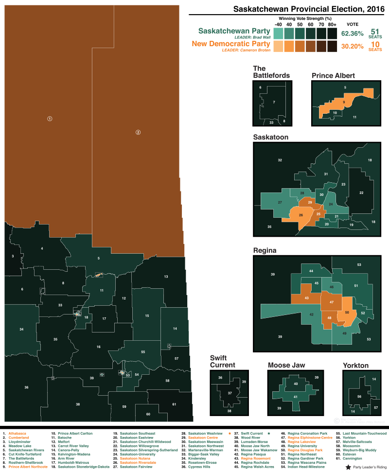
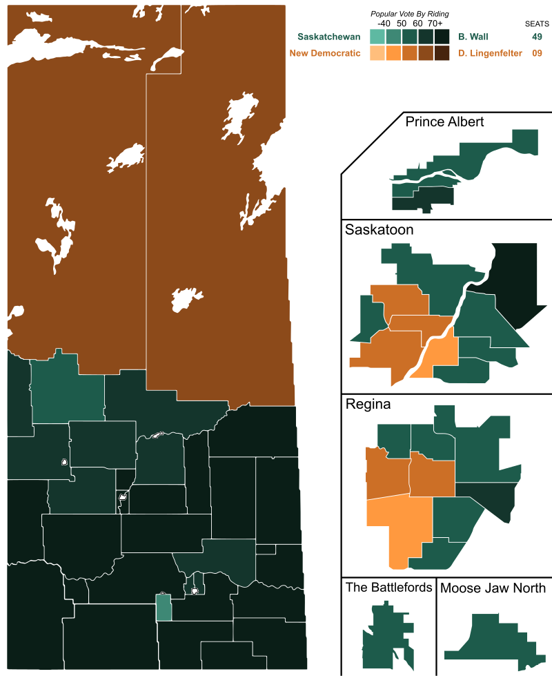
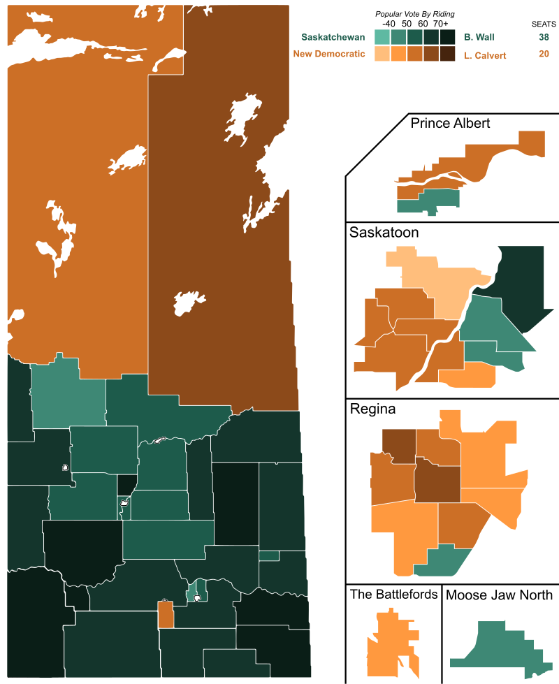
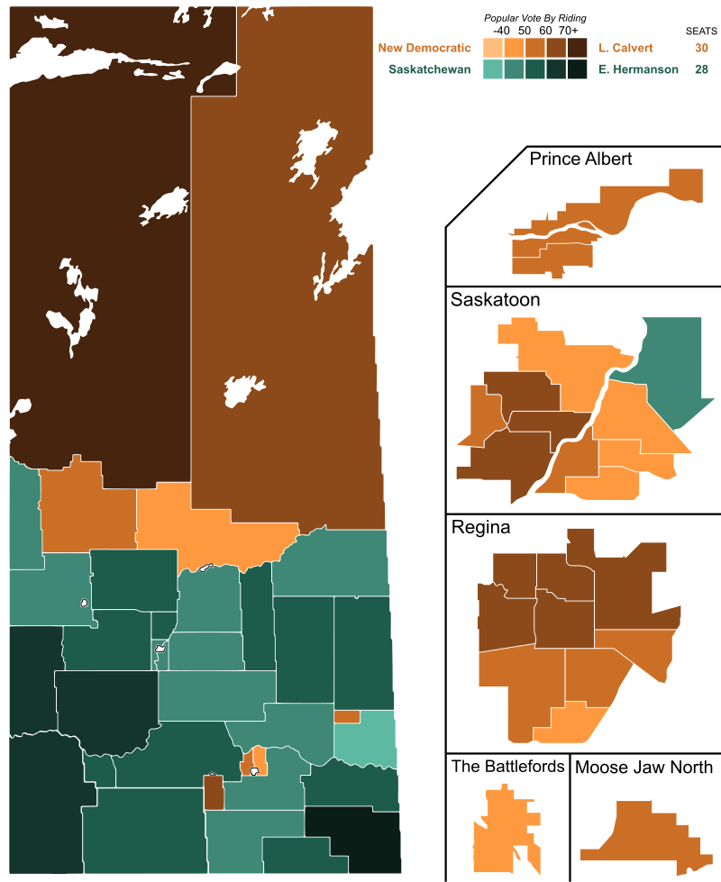
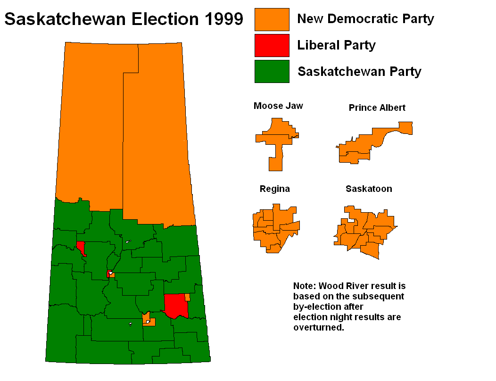
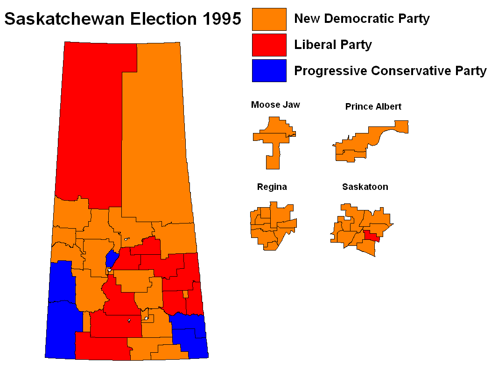

All images are from Wikipedia
library(magick)
# all images are in a folder called `maps`
fnames <- list.files("maps")
mp <- image_read(paste("maps", fnames, sep = "/")) %>% image_scale("x800")
image_write(image_animate(mp, fps = 1), "Saskatchewan_Provincial_Elections.gif")




